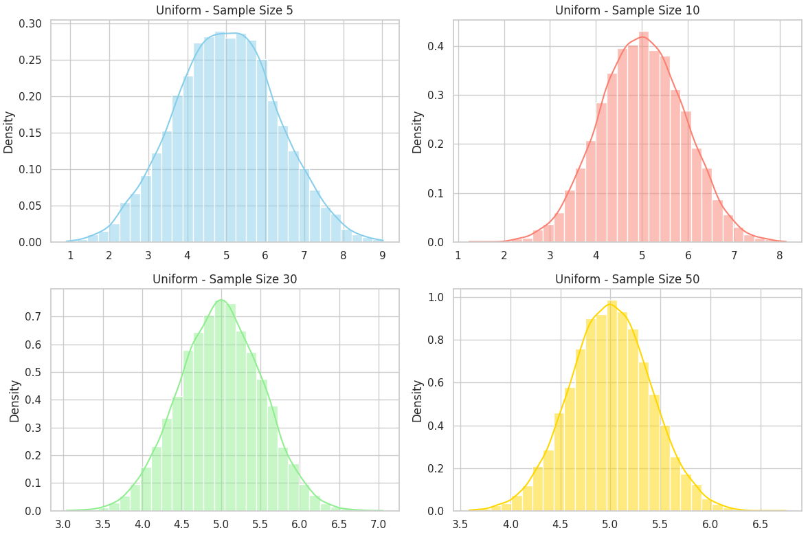
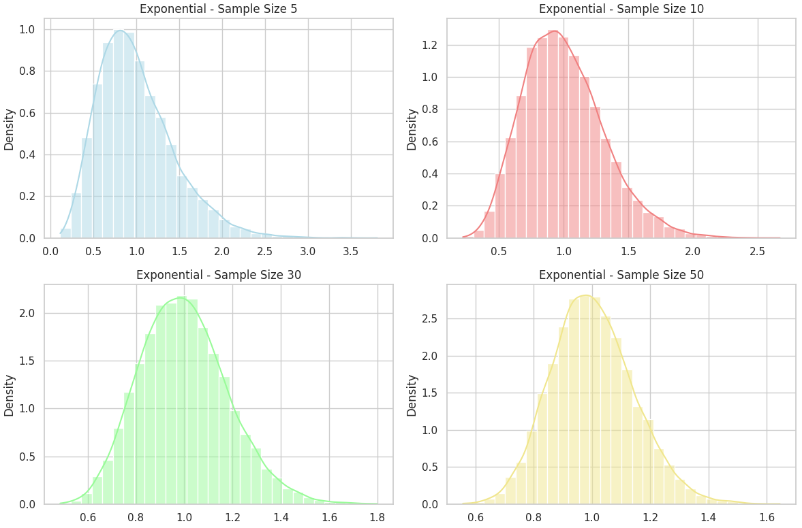
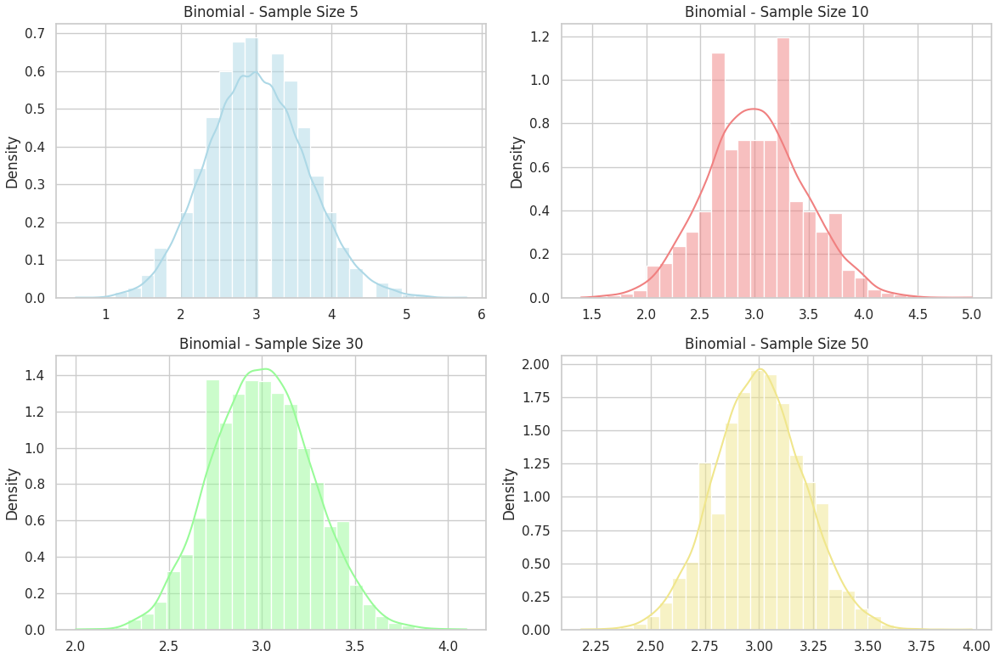

Problem 1
Exploring the Central Limit Theorem (CLT) Through Simulation
Objective
To understand and visualize how the Central Limit Theorem (CLT) works in practice using simulation techniques on different types of population distributions.
What is the Central Limit Theorem?
The Central Limit Theorem (CLT) is a fundamental theorem in probability and statistics. It states:
If you take sufficiently large random samples from any population with a finite mean (\(\mu\)) and finite variance (\(\sigma^2\)), the distribution of the sample means will approach a normal distribution, regardless of the shape of the population distribution.
Mathematical Formulation
Let \(X_1, X_2, \dots, X_n\) be independent and identically distributed random variables with:
- Mean: \(\mu\)
- Variance: \(\sigma^2\)
Then the sample mean:
approaches a normal distribution:
as \(n \rightarrow \infty\).
Distributions Used in This Simulation
We explore the CLT using three distinct population distributions:
| Distribution Type | Description | Shape |
|---|---|---|
| Uniform | Evenly distributed between [0, 1] | Symmetric |
| Exponential | Decaying probability, positive values only | Skewed (Right) |
| Binomial | Discrete counts of successes in trials | Varies (Symmetric if \(p=0.5\)) |
## Uniform Distribution

Exponential Distribution

Binomial Distribution

import numpy as np
import matplotlib.pyplot as plt
import seaborn as sns
# Set style for the plots
sns.set(style="whitegrid")
def simulate_sample_means(distribution_func, sample_sizes, num_samples=10000):
"""
Simulates sample means for different sample sizes.
Parameters:
distribution_func: function that generates samples (e.g., np.random.uniform)
sample_sizes: list of sample sizes to test
num_samples: how many times to repeat sampling
Returns:
Dictionary mapping sample_size -> list of sample means
"""
results = {}
for n in sample_sizes:
sample_means = []
for _ in range(num_samples):
# Generate a sample from the specified distribution
sample = distribution_func(size=n)
# Calculate the mean of the sample
sample_mean = np.mean(sample)
# Store the sample mean
sample_means.append(sample_mean)
results[n] = sample_means
return results
# Define the population distribution: Uniform between [0, 10]
def generate_uniform(size):
return np.random.uniform(0, 10, size=size)
# Define the sample sizes to simulate
sample_sizes = [5, 10, 30, 50]
# Simulate sample means for the uniform distribution
uniform_data = simulate_sample_means(generate_uniform, sample_sizes)
# Create a figure and subplots to display the histograms
fig, axes = plt.subplots(2, 2, figsize=(12, 8))
# Plot histograms of the sample means for each sample size
for ax, n in zip(axes.flat, sample_sizes):
sns.histplot(uniform_data[n], ax=ax, kde=True, stat="density", bins=30)
ax.set_title(f"Uniform - Sample Size {n}")
# Adjust layout for better spacing
plt.tight_layout()
# Display the plot
plt.show()
Simulation Process
For each population distribution, we follow this procedure:
- Generate a large population of size \(N = 100,\!000\).
- Sample multiple times from this population using sample sizes:
- \(n = 5, 10, 30, 50\)
- Repeat each sampling 1000 times to create a distribution of sample means.
- Plot histograms of these sample means to observe the distribution shape.
- Compare results across sample sizes to see convergence to normality.
What We Expect to Observe
- For small sample sizes, the distribution of sample means may resemble the shape of the population.
- As the sample size increases, the distribution of sample means becomes more bell-shaped and symmetric.
- The spread (standard deviation) of the sample mean shrinks as sample size increases:
Key Definitions
| Term | Meaning |
|---|---|
| Population | The entire dataset from which samples are drawn |
| Sample | A subset of the population |
| Sample Mean | The average value of a sample |
| Sampling Distribution | Distribution of sample means over many samples of the same size |
| Standard Error | Standard deviation of the sample mean, \(\sigma / \sqrt{n}\) |
Why CLT Is So Important
- Foundational for inferential statistics: It allows us to use sample statistics to infer population parameters.
- Enables confidence intervals and hypothesis testing.
- Provides justification for using the normal distribution in many practical applications, even when data isn't normal.
Real-World Applications
Manufacturing & Quality Control
Monitor average product measurements (e.g., bolt diameter) to detect process issues.
Business Analytics
Use sample survey data to estimate market preferences.
Finance
Model portfolio returns — CLT helps justify assumptions of normality in asset returns.
Healthcare
Analyze average response times or treatment outcomes from clinical trials.
Summary
- The CLT shows how random variation averages out over many samples.
- Even for non-normal populations, the mean of many samples becomes normal.
- This allows reliable estimation of population parameters using normal-based techniques.
Colab
https://colab.research.google.com/drive/1zb1_0HUP0-2ykWkjjA-NkAFgA_OBmLtH?usp=sharing